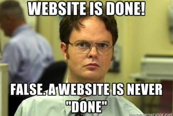
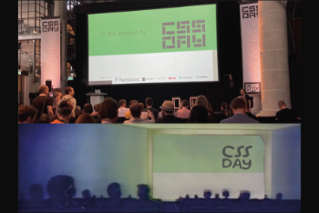
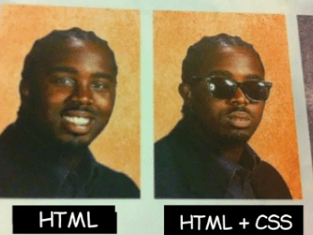
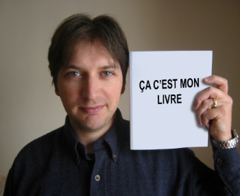
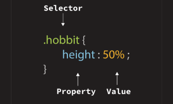
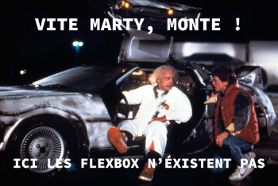
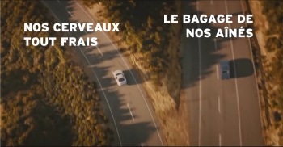

In And Out Of Style
CSS.Day {
Un évènement smart
Le CSS Day présente une suite de conférences avec une ambiance informelle, qui compte de nombreuses pauses et qui cherche à favoriser le dialogue entre les intervenants et le public. L’événement voit le jour en 2013. Il s’agissait de conférences avancées sur le css.
Par la suite, la conférence s’agrandit et des sessions de conceptions y sont ajoutées. Aujourd’hui la conférence se déroule sur deux jours et elle compte de nombreux participants parmi lesquels s’entremêlent des développeurs, des designers CSS ou encore des fournisseurs de navigateurs.
Édition 2022
Quatorze intervenants étaient invités cette année. Le premier jour a débuté par notre conférencier favori, Jeremy Keith, succédé par la développeuse web Lea Verou avec une impressionnante démonstration sur le CSS ou encore Ana Ferreira, UX designer, qui a amené une approche humaine du travail à distance.
Le deuxième jour était rythmé par des conférenciers talentueux, comme Adam Argyle qui démontre l’évolution des scrollbar mais aussi Ben Evans avec son talent artistique en CSS. Un événement au même avenir que ce langage révolutionnaire.
La conférence
La « théorie de l’information » de Shannon et le « sharing context » structure et conceptualisent ce qu’on peut notamment trouver sur internet, deux notions importantes du web selon Jeremy. Il nous raconte le début du web design, se faisant directement dans l’HTML. Plusieurs propositions de “stylesheet” font leur apparition au début des années 90, le CSS apparaît ensuite en 1995. Le css peut-être simple, il n’est pas facile pour autant.
Par la suite, d’anciens “hacks” nous sont présentés. Détourner des outils pour la mise en page, des combines qui montrent l’évolution et la nécessité de l’être pour le CSS, ce qui introduit au fait que de nouveau format de CSS sont apparus. Une grande question se pose toujours, qu’est ce qu’il manque encore au CSS ? Les gens chercheront une autre façon de coder qui sera plus accessible.
En conclusion, Jeremy nous explique que rien est inévitable, l’avenir est créé des actions faites aujourd’hui, il faut donc prendre les bonnes décisions afin d’assurer l’avenir qu’on souhaite avoir.
Une vraie âme d’artiste
Jeremy Keith est un développeur web, conférencier, musicien et écrivain britannique. Né à Londres en 1971, il fait ses études au collège des arts et design en Irlande. En 2005 il publie son premier livre Dom Scripting et sortira par la suite HTML5 for web designers.
La même année, avec Richard Rutte, ils confondent Clearleft et l’annoncent au cours de leur toute première conférence SXSW. Ce personnage est un homme avec une philosophie de vie très honorable, il vit dans le partage de connaissance, prône une vie sans artifices. Sa boîte est un bon exemple de cette philosophie, elle montre qu’il n’y a pas pas nécessaire de se situer dans de grandes villes reconnues pour faire du résultat. Également musicien, il crée son premier site web pour un groupe allemand dans lequel il jouait en 1997. Réel passionné, il aborde ses conférences d’un point de vue historique et nous rappelle le passé pour nous pousser à la vision du futur.
}Mes.réflexions {
Ma vision des conférences
Les conférences, n’étant pas un format que j’affectionnais réellement ou auquel je m’étais intéressé, m’ont d’abord laissé légèrement réticent à l’idée de les visionner.

À la lecture de cette première d’une longue série, j’ai acquis un nombre de connaissances supérieur à ce que j’aurais pu lire sur internet en l’espace du même temps. Une heure a donc suffi à changer ma vision de ce mot “conférence“. Jeremy Keith n’y est évidemment pas pour rien, il a su capter mon attention dès le début de sa présentation en abordant la théorie de l’information de Shannon. Une représentation qui résume efficacement les parties fondamentales de l’information, l’émetteur, le signal, le récepteur et inévitablement le bruit. Internet se résume un peu de cette façon pour moi avec cet ensemble de signaux qui circulent constamment.
Mon premier ressenti
La passion avec laquelle Jeremy parle donnait plus de vie à ses propos, dans sa première partie sur les débuts du World Wide Web mais également dans la seconde, vraiment destinée au CSS. Parlons d’ailleurs de ce langage qui, à priori, me faisait peur également. Jeremy nous démontre certaines anciennes pratiques avant que celui-ci n’existe, ainsi qu’une multitude de propositions de “stylesheet” élaborées par des adeptes souhaitant des moyens plus simples pour créer le design de leurs pages web. C’est en expliquant les points forts mais aussi les points faibles de ces propositions qu’il a pu me faire comprendre comment ce langage était né mais aussi ses buts fondamentaux.
Cette phrase qu’il dit «Le CSS est simple mais le CSS n’est pas facile» résume bien l’idée de celui-ci.
Une nouvelle génération ?
J’ai pris conscience durant cette conférence, que je faisais partie d’une génération qui a tout entre ses mains. Nous avons plus de ressources que l’avaient nos aînés, pour faire un travail correct et dans les grandes règles. Par là, j’entends que la plupart des problèmes qu’ils ont rencontré à l’époque dans ce domaine sont déjà résolu; les “hacks” avec des gifs transparents, des tableaux ne sont plus nécessaire car le CSS est apparu et a même encore évolué du temps où les “floats” étaient utilisés. Je prends conscience qu’arriver dans le domaine et que les flexbox existent déjà est une aubaine.
Je prends conscience qu’arriver dans le domaine et que les flexbox existent déjà est une aubaine.
Les choses à bien retenir
Durant ce qui s’apparente à une conclusion de cette conférence Jeremy Keith insiste sur le fait que nos préoccupations se tournent trop vers ici et maintenant. Tout comme nos prédécesseurs l’ont été pour nous offrir ce monde du web actuel, nous sommes l’avenir de ce monde et selon lui, nous devons nous tourner vers le passé pour pouvoir nous tourner vers notre futur.
Des propos captivants tenus par un personnage encore plus intéressant sur des sujets qui feront partie à part entière de ma vie. Voilà ce que je retiens de “In And Out Of Style“.
}